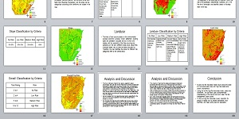
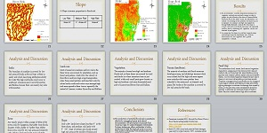
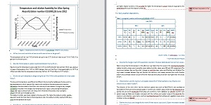
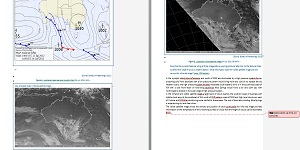

Data Analysis
Analysis is a necessary step in the process of managing projects. It displays employees' ability of finding out problems, induction and summing up, logic and the understanding extent to their fields of study. Therefore analysis skill has been an indispensable element that considered by employers to assess the comprehensive skills of an employee. In environmental science, we usually have an analysis and discussion for the recorded data, then get the conclusion of the experiment or project. It is a common way to evaluate our degree of grasping the knowledge learnt from the unit according to the interpretation of the data, understanding of different factors and use of the various sources. Here are some images of analysis section in my climatology assignment of Earth Systems 2: The Hydrosphere and risk project for Introduction to Geographic Information Systems.
 Fire Risk Assessment Flood Risk Analysis
 